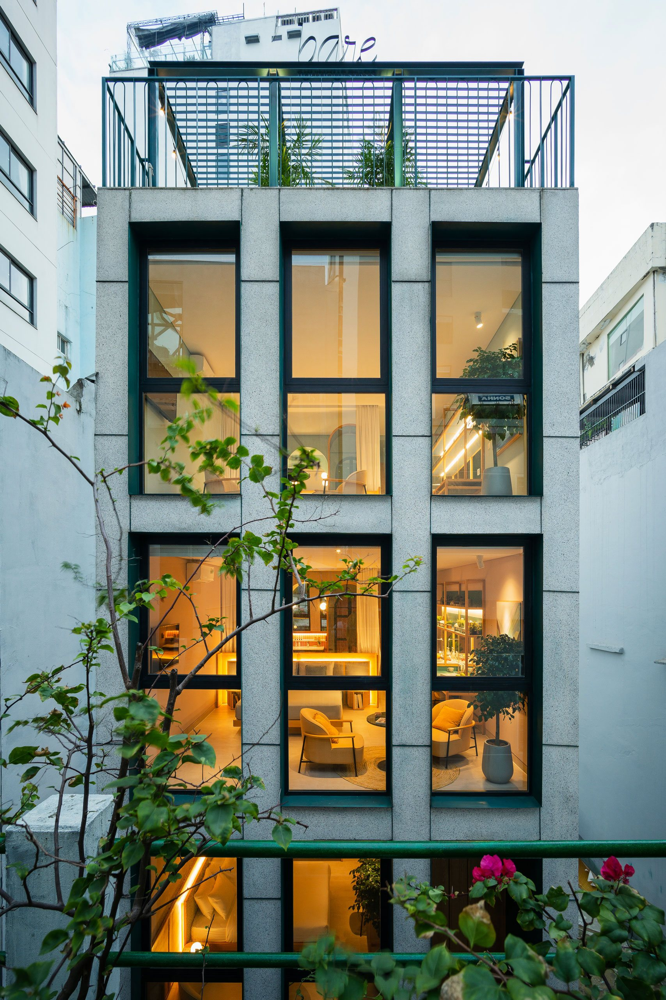
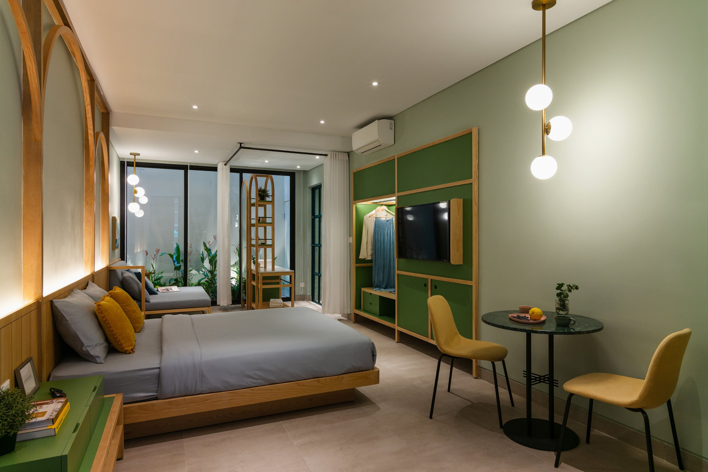

Accommodation
for the free spirited.
Just across the Gothic-style cathedral built during the French colonial period in the feverish city of Da Nang, a new cozy boutique hotel has been risen. Located on a quiet alley, the new hotel, Bare Han, was built under the Bare Boutique Stays brand offering a special kind of accommodation.
Combined positioning and architecture create a safe space that feels like home in a foreign city. With every new opened location, the Bare Boutique Stays create comfortable and private spaces where you can find peace after exploring new places.
Exuding of a youthful energy still respectful of the past, the place displays a very elegant contemporary design.
The Bare Boutique Stays brand honours its mission of offering tranquillity and privacy for its guests. Through this, the Bare Han is loyal to the self-check-in and check-out system used by the brand. For more privacy, each studio room is arranged on a separate floor.
The materials used for the facade – wood stone and metal – offer the perfect combination for the elegant style that the hotel exudes. The form of the building is very narrow, which marks the need for an open facade that assures a lot of light for the interior space. The architecture of the facade is simple with elegant lines formed by the three vertical registers which accentuates the height of the building.

The interior space denotes coziness and tranquillity. Each studio room has its own colour palette and its own furnishing, creating different joyful atmospheres suited for relaxation. For the interior space, the architects were inspired by the nearby Gothic cathedral and included a series of arches. These lively lines bring together the antique and the contemporary design styles in an interesting balance that radiate a ludic character.
The main material used for the interior design is the traditional Ash wood with its light tones, combined with painted metal and marble used for accents of the space, such as doors and furniture. Lighting is also important for each room, both natural lighting that come from the large window and artificial lighting that is carefully positioned to create a soothing and relaxing atmosphere.

The layout of each room focuses on functionality and the efficiency in the use of space. The interior design proposes clever arranging of the different functions needed for the perfect stay. Finding the most efficient layout for each design was always the goal of the architects, and it can be clearly seen here.
The outside corridors and the stairs are filled with natural light offered through the skylight and the lateral wind cement block wall. This fresh space creates the best transition from the feverish city to the tranquillity of the room. On the last story of the building there is a marvellous terrace filled with light and sumptuous plants. This common space of the hotel is protected by a pergola making it the perfect place to retire after a day of sightseeing.
Through its elegant design and carefully chosen furnishing, the Bare Han Hotel delivers on the promise of relaxation in a very exquisite location from Da Nang city. The interior atmosphere created through the lively details and colour palette combines the past design experiences with the contemporary trends and creates a cozy architecture suited for the free spirited.